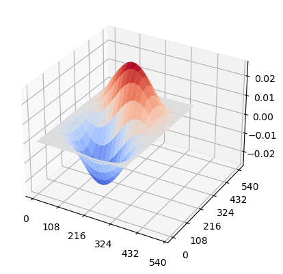
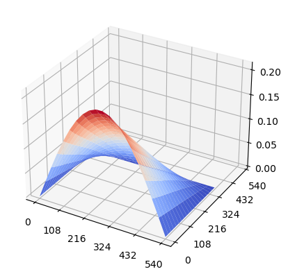

Critical Buckling Examples With Varying Boundary Conditions#
Thanks the Bardell equations implamentation, composipy is capable of simulating different boundary conditions and different combinations of load cases.
Importing composipy objects and creating properties#
[88]:
from composipy import OrthotropicMaterial, LaminateProperty
from composipy import PlateStructure
import matplotlib
[54]:
#Ply Material Properties (MPa and mm)
E1 = 60800
E2 = 58250
v12 = 0.07
G12 = 4550
t = 0.21
# Plate Parameters (mm)
a = 360.
b = 360.
m = 10 # discretization in x direction
n = 10 # discretization in y direction
# Stacking sequence
stacking = [45,-45,0,90,45,-45,0,90,45,-45]
stacking += stacking[::-1] # symmetry
[55]:
# Ply material and laminate property objects
ply_1 = OrthotropicMaterial(E1, E2, v12, G12, t)
l1 = LaminateProperty(stacking, ply_1)
Pinned Nxx#
[56]:
panel_SSSS = PlateStructure(l1, a, b, m=m, n=n, Nxx=-1,constraints='PINNED')
[57]:
eigvals, eigvecs = panel_SSSS.buckling_analysis()
[58]:
eigvals
[58]:
array([ 97.04915682, 144.47730786, 246.83882036, 388.19669784,
393.21258067])
[59]:
panel_SSSS.plot_eigenvalue()

Clamped Nxy and Nyy#
[92]:
panel_CCCC = PlateStructure(l1, a, 1.5*b, m=m, n=n, Nxy=-1, Nyy=-1, constraints='CLAMPED')
[93]:
panel_CCCC.buckling_analysis()
[93]:
(array([138.79310181, 146.27293322, 214.40196835, 235.95368935,
345.90300267]),
array([[ 9.34248014e-16, -1.88156661e-14, 2.02134850e-14,
2.34440133e-15, 1.61245714e-14],
[-2.12462063e-14, 9.37191184e-14, -1.09651915e-13,
1.22922751e-15, -8.64977457e-14],
[-1.68030603e-14, -2.94928446e-15, 3.17565273e-15,
6.43801745e-15, 2.49531496e-15],
...,
[ 1.48429879e-13, -6.09319462e-02, 5.26382491e-01,
6.94793823e-13, 8.03873977e-01],
[ 1.74056918e-01, 1.50428248e-13, 1.23757124e-13,
-1.99938292e-01, 1.44448141e-13],
[ 1.19772248e-13, -4.03658981e-02, 4.21566452e-01,
9.40855121e-13, 5.20345902e-01]]))
[94]:
panel_CCCC.plot_eigenvalue()
%matplotlib inline

Free edge Nxx (custom boundary condition)#
[95]:
constraints={
'x0': ['TX', 'TY', 'TZ'],
'xa': ['TX', 'TY', 'TZ'],
'y0': [],
'yb': ['TX', 'TY', 'TZ'],
}
panel_SSFS = PlateStructure(l1, 1.5*a, b, m=m, n=n, Nxx=-1, constraints=constraints)
[96]:
panel_SSFS.buckling_analysis()
[96]:
(array([ 20.12080055, 47.13886913, 92.5739614 , 156.53663617,
185.19779529]),
array([[-5.54254543e-15, 8.54682964e-15, 2.02336476e-15,
2.14117401e-14, 2.25590066e-14],
[ 2.70857705e-13, -3.87614772e-13, 1.33465332e-13,
-2.01037659e-12, -4.41333984e-13],
[-2.62755574e-14, 1.09823238e-13, -6.76289507e-15,
1.36766074e-13, 1.13523615e-14],
...,
[ 6.90309193e-03, 6.95127053e-05, -5.12419786e-03,
3.38168226e-02, -1.43816796e-05],
[ 9.66068997e-04, -2.79805029e-05, 4.46813288e-04,
-2.74685452e-02, -3.51157619e-05],
[ 3.64137204e-03, 3.67529764e-05, -2.79731072e-03,
3.43269351e-02, -6.21653806e-06]]))
[97]:
panel_SSFS.plot_eigenvalue()

Nxy Loading#
[66]:
panel_CCCC_nxy = PlateStructure(l1, a, b, m=m, n=n, Nxy=-1, constraints='CLAMPED')
[67]:
panel_CCCC_nxy.buckling_analysis()
[67]:
(array([338.84283307, 389.26571459, 776.82143839, 824.28455938,
882.94931083]),
array([[-9.85787017e-14, 5.49320863e-14, -5.53627846e-14,
-5.47863549e-14, -1.63309599e-13],
[-1.14383443e-13, 4.82531544e-14, -2.16269855e-14,
-8.98291546e-14, -2.25169408e-13],
[-8.24080163e-15, 5.29270154e-14, -4.71651923e-15,
-9.11230373e-14, -1.89295317e-14],
...,
[ 5.84301288e-01, 7.76122020e-13, 3.22800174e-01,
3.29448845e-12, 2.20803287e-12],
[-7.64092132e-13, -1.01135119e-01, 6.65989832e-12,
-1.79699680e-01, -3.68197373e-01],
[ 3.89453084e-01, 5.26513867e-13, 2.20302574e-01,
1.92960329e-12, -5.54281896e-14]]))
[68]:
panel_CCCC_nxy.plot_eigenvalue()

[ ]: